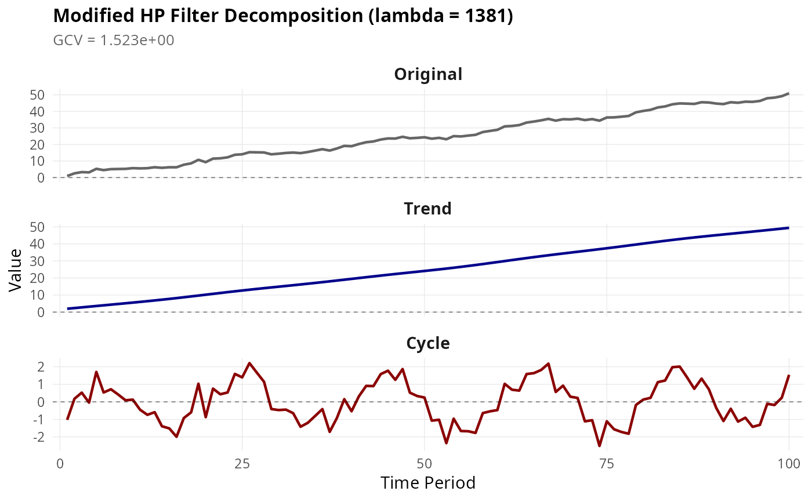

Decomposes a time series into trend and cyclical components using the Modified HP Filter, which automatically selects the optimal smoothing parameter lambda via generalized cross-validation (GCV).
Arguments
- x
Numeric vector. The time series to decompose. Must have at least 5 observations and no missing values.
- max_lambda
Integer. Maximum lambda value to search over. Default is 100000, which covers most macroeconomic applications. The search ranges from 1 to `max_lambda`.
- as_dt
Logical. If TRUE (default), returns a data.table. If FALSE, returns a list with class "mhp".
Value
If as_dt = TRUE: A data.table with columns:
- original
The input series
- trend
The estimated trend component
- cycle
The cyclical component (original - trend)
With attributes lambda (optimal lambda) and gcv (GCV value).
If as_dt = FALSE: A list with class "mhp" containing elements:
- original
The input series
- trend
The estimated trend component
- cycle
The cyclical component
- lambda
Optimal smoothing parameter
- gcv
Generalized cross-validation value
Details
The function performs a grid search over lambda values from 1 to `max_lambda` and selects the lambda that minimizes the GCV criterion. For each lambda, it solves the system:
$$(I + \lambda K'K)g = y$$
where \(K\) is the second-difference matrix, \(g\) is the trend, and \(y\) is the original series.
References
Choudhary, M.A., Hanif, M.N., & Iqbal, J. (2014). On smoothing macroeconomic time series using the modified HP filter. Applied Economics, 46(19), 2205-2214.
Examples
# Simulate a trend + cycle series
set.seed(42)
n <- 100
trend <- cumsum(c(0, rnorm(n - 1, mean = 0.5, sd = 0.2)))
cycle <- 2 * sin(2 * pi * (1:n) / 20) + rnorm(n, sd = 0.5)
y <- trend + cycle
# Apply Modified HP filter
result <- mhp_filter(y, max_lambda = 10000)
# Extract optimal lambda
get_lambda(result)
#> [1] 1381
# Extract GCV value
get_gcv(result)
#> [1] 1.523201
# Print summary
print(result)
#> original trend cycle
#> <num> <num> <num>
#> 1: 0.9446362 1.969950 -1.02531357
#> 2: 2.5502449 2.373443 0.17680216
#> 3: 3.3016616 2.776193 0.52546832
#> 4: 3.1343864 3.177587 -0.04320051
#> 5: 5.2846912 3.577390 1.70730135
#> 6: 4.5100303 3.975337 0.53469346
#> 7: 5.0908699 4.372399 0.71847111
#> 8: 5.1868260 4.769934 0.41689181
#> 9: 5.2603105 5.169821 0.09048911
#> 10: 5.7012329 5.574241 0.12699199
#> 11: 5.5361400 5.985439 -0.44929850
#> 12: 5.6674507 6.405752 -0.73830150
#> 13: 6.2488989 6.837194 -0.58829548
#> 14: 5.8902938 7.281243 -1.39094932
#> 15: 6.2272581 7.738950 -1.51169205
#> 16: 6.2200398 8.210360 -1.99032047
#> 17: 7.7706916 8.694424 -0.92373200
#> 18: 8.5911462 9.188649 -0.59750272
#> 19: 10.7246623 9.689876 1.03478597
#> 20: 9.3225993 10.194513 -0.87191374
#> 21: 11.4543422 10.699716 0.75462650
#> 22: 11.6351103 11.202010 0.43310081
#> 23: 12.2329068 11.698466 0.53444055
#> 24: 13.7801714 12.186471 1.59370027
#> 25: 14.0603226 12.663797 1.39652601
#> 26: 15.3388826 13.129369 2.20951379
#> 27: 15.2554916 13.583125 1.67236622
#> 28: 15.1688678 14.026604 1.14226407
#> 29: 14.0531956 14.462553 -0.40935695
#> 30: 14.4271460 14.894547 -0.46740123
#> 31: 14.8832452 15.325867 -0.44262185
#> 32: 15.1108508 15.759453 -0.64860198
#> 33: 14.7791058 16.197925 -1.41881878
#> 34: 15.4485176 16.643433 -1.19491547
#> 35: 16.2902588 17.097101 -0.80684264
#> 36: 17.1476198 17.559187 -0.41156768
#> 37: 16.3198123 18.029365 -1.70955267
#> 38: 17.5952811 18.507010 -0.91172852
#> 39: 19.1420451 18.990259 0.15178594
#> 40: 18.9416236 19.476591 -0.53496752
#> 41: 20.2755121 19.963593 0.31191923
#> 42: 21.3574295 20.448465 0.90896477
#> 43: 21.8268956 20.928632 0.89826321
#> 44: 22.9841048 21.402180 1.58192460
#> 45: 23.6442704 21.867843 1.77642770
#> 46: 23.5805152 22.325500 1.25501531
#> 47: 24.6466272 22.776318 1.87030890
#> 48: 23.7446957 23.222373 0.52232258
#> 49: 23.9998913 23.667094 0.33279759
#> 50: 24.3605839 24.114288 0.24629593
#> 51: 23.4970640 24.568005 -1.07094052
#> 52: 24.0117475 25.032470 -1.02072292
#> 53: 23.1570930 25.511137 -2.35404421
#> 54: 25.0475167 26.006717 -0.95920080
#> 55: 24.8578020 26.520219 -1.66241702
#> 56: 25.3765412 27.051955 -1.67541377
#> 57: 25.8307269 27.601035 -1.77030818
#> 58: 27.5242933 28.165356 -0.64106226
#> 59: 28.2035364 28.741531 -0.53799453
#> 60: 28.8563472 29.325711 -0.46936394
#> 61: 30.9419416 29.913657 1.02828444
#> 62: 31.1944306 30.500790 0.69364102
#> 63: 31.7258120 31.083274 0.64253808
#> 64: 33.2437504 31.657778 1.58597275
#> 65: 33.8586121 32.221434 1.63717828
#> 66: 34.5916427 32.772524 1.81911899
#> 67: 35.4892764 33.310514 2.17876219
#> 68: 34.4014253 33.836189 0.56523597
#> 69: 35.2752614 34.351911 0.92335051
#> 70: 35.1564970 34.860450 0.29604705
#> 71: 35.5879724 35.365246 0.22272625
#> 72: 34.7591402 35.869954 -1.11081332
#> 73: 35.3318381 36.378387 -1.04654939
#> 74: 34.3816252 36.893559 -2.51193364
#> 75: 36.3102910 37.417721 -1.10742988
#> 76: 36.3872717 37.951308 -1.56403596
#> 77: 36.7797731 38.493952 -1.71417856
#> 78: 37.2267567 39.044152 -1.81739577
#> 79: 39.4230547 39.599169 -0.17611413
#> 80: 40.2840260 40.154943 0.12908292
#> 81: 40.9373290 40.707290 0.23003879
#> 82: 42.3763127 41.252119 1.12419388
#> 83: 43.0025781 41.785504 1.21707419
#> 84: 44.2808030 42.304334 1.97646859
#> 85: 44.8174345 42.806381 2.01105363
#> 86: 44.6937249 43.290845 1.40288015
#> 87: 44.5035566 43.758384 0.74517272
#> 88: 45.5361578 44.210672 1.32548600
#> 89: 45.3687939 44.649922 0.71887194
#> 90: 44.7421776 45.079307 -0.33712964
#> 91: 44.4093574 45.502521 -1.09316375
#> 92: 45.5300175 45.923013 -0.39299574
#> 93: 45.2172960 46.343441 -1.12614545
#> 94: 45.8621365 46.766179 -0.90404245
#> 95: 45.7691645 47.192784 -1.42361911
#> 96: 46.3123097 47.624159 -1.31184902
#> 97: 47.9467029 48.060177 -0.11347374
#> 98: 48.3218187 48.499760 -0.17794105
#> 99: 49.1788687 48.941748 0.23712042
#> 100: 50.9272697 49.384854 1.54241593
#> original trend cycle
#> <num> <num> <num>
# Plot with ggplot2
if (require(ggplot2)) {
autoplot(mhp_filter(y, max_lambda = 10000, as_dt = FALSE))
}
